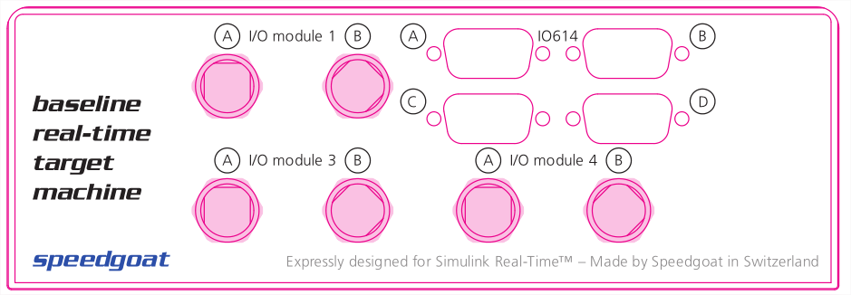

IO614 Pin Mapping
IO614 Pin Mapping — Reference information about the I/O module connector
Description
The IO614 I/O module offers four DB9 connectors. Each connector contains a CAN channel.
Additionally, there is one LIN channel on the CAN channel 2 connector.
Channel Location
The following figure shows the outlines of an example Baseline target machine with the IO614 I/O module located in the top-right corner.

![[Note]](images/note.png) | Note |
|---|---|
Note that the four DB9 connectors are labeled A, B, C & D.
|
Connector Pin Mapping
The following figure shows the pin numbering of a DB9 connector when looking from the front (outside of the target machine).

The pin mapping of the four connectors is identical and is listed in the following table:
| Pin | Signal | Condition |
|---|---|---|
| 1 | CAN Low | CAN channel configured Low Speed (LS) (only channel 1) |
| 2 | CAN Low | CAN channel configured High Speed (HS) |
| 3 | GND | |
| 4 | Can High | CAN channel configured Low Speed (LS) (only channel 1) |
| 5 | - | |
| 6 | - | |
| 7 | CAN High | CAN channel configured High Speed (HS) |
| 8 | LIN | Only channel 2 |
| 9 | LIN VBAT (8-18 V DC)[a] | Only channel 2 |
[a] Every LIN transceiver that belongs to the same LIN network needs to be supplied by the same voltage source. | ||
For proper operation, a CAN topology requires electrical termination in the form of resistors.
The IO614 I/O module does not include termination resistors. The full resistor comes with the CAN module loopback cable provided by Speedgoat.